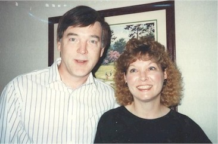
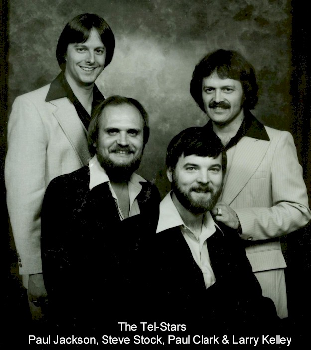

BHS 1967 Class Member
Paul Edward Clark
Click to Email
Click to Email
 1967 Click for Bryant Elementary Photo |
 Me and Jeri in 1992 |
| Jeri & me in 2007 |
 Click Here for More on the Tel-Stars |
| 1967 Click for Bryant Elementary Photo |
 Me and Jeri in 1992 |
| Jeri & me in 2007 |
 Click Here for More on the Tel-Stars |
Click Here to see About the Telstars
Click Here to see Paul's Barney Award 2007
Click Here for Paul & Jeri on YouTube 2007
Click Here to see my inflated bio and also a listing of the music I've had published